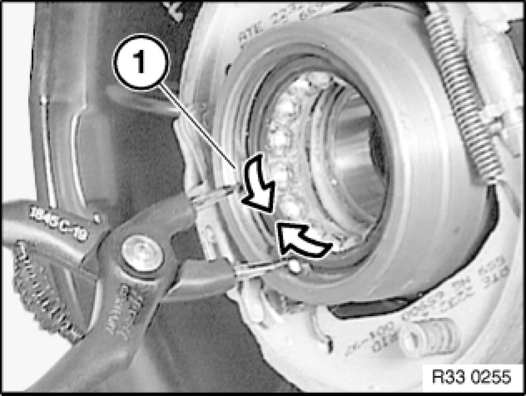
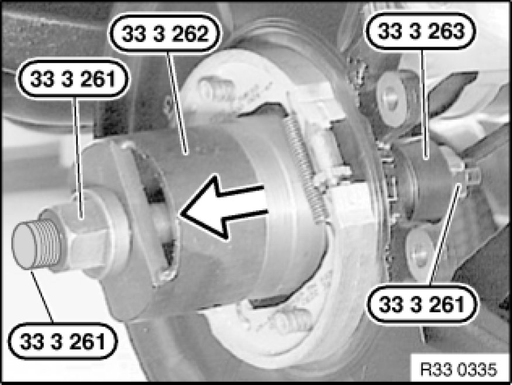
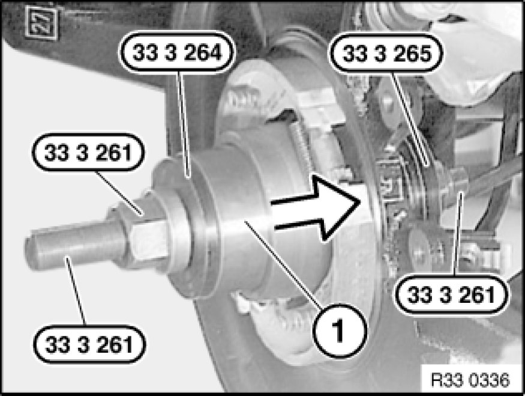

Replacing Left Wheel Bearing on Rear Axle Shaft
33 41 153 - Replacing left wheel bearing on rear axle shaft

Special tools required:
- 33 3 261
- 33 3 262 33 3 260 Set of Tools
- 33 3 263 33 3 260 Set of Tools
- 33 3 264 33 3 260 Set of Tools
- 33 3 265 33 3 260 Set of Tools

Necessary preliminary tasks:
- Remove drive flange for rear axle shaft
- Detach wheel bearing inner race from drive flange

Press retaining ring (1) together using pliers and remove.
Installation:
Install retaining ring (1).
Check seating of retaining ring (1), correct if necessary.

Pull out wheel bearing with special tools 33 3 261, 33 3 262 33 3 260 Set of Tools and 33 3 263 33 3 260 Set of Tools.

Important!
Do not reuse old wheel bearing!
Note installation direction of wheel bearing.

Installation:
Draw in wheel bearing (1) with special tools 33 3 261, 33 3 264 33 3 260 Set of Tools and 33 3 265 33 3 260 Set of Tools.
After installation:
- Adjust handbrake Adjustments